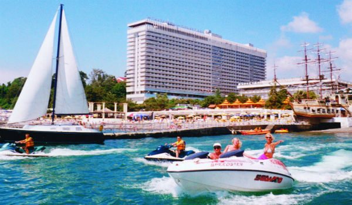

Пошаговая инструкция: как получить компенсации в России в связи с COVID-19.: lleo_kaganov — ЖЖ
 LiveJournal Интересное Сообщества RSS трансляции Магазин ⭐️ iOS & Android Помощь Войти Войти СОЗДАТЬ БЛОГ СОЗДАТЬ Русский (ru) English (en) Русский (ru) Українська (uk) Français (fr) Português (pt) español (es) Deutsch (de) Italiano (it) Беларуская (be) lleo_kaganov — Подписаться
Войти
Нет аккаунта? Зарегистрироваться Facebook Twitter GoogleАвторизуясь в LiveJournal с помощью стороннего сервиса вы принимаете условия Пользовательского соглашения LiveJournal
Нет аккаунта? Зарегистрироваться Пишет lleo_kaganov ( lleo_kaganov )2020 - 05 - 15 16:10:00 lleo_kaganov
lleo_kaganov
2020 - 05 - 15 16:10:00 Назад Поделиться Пожаловаться Вперёд Категории: Общество Медицина Дети Коронавирус Отменить
Пошаговая инструкция: как получить компенсации в России в связи с COVID-19.
это перепост заметки, оригинал находится на моем сайте: https://lleo.me/dnevnik/2020/05/15 Еще недавно, рассказывая историю фирмы друзей в Германии, я был уверен, что в России не будет никакой помощи населению и бизнесу в связи с вынужденным карантином, по крайней мере, меня и моих знакомых никакие выплаты не коснутся. Пришло время сказать вам, что я ошибался. Да, эти выплаты не европейских масштабов, возможно они доступны не всем, и уж точно не все о них знают. Но они есть, они реально работают, и они реально помогают пережить кризис. На сегодняшний день мне известны, как минимум, два типа компенсаций:
=============== cut ===============
— компенсация на ребенка до 16 лет
— компенсация предпринимателям с определенными видами деятельности
=============== /cut ===============
Ниже я вам о них расскажу и поделюсь своим опытом.
Компенсация ИП 12000 рублей
Ребята, это удивительно. Всего два дня (!) понадобилось налоговой Москвы, чтобы по моему заявлению, отправленному с сайта, сегодня утром мне на счет упали 12130 рублей (почему-то так) в качестве компенсации за апрель! Говорят, еще будет за май. Я бы никогда не узнал, если бы не
пост Димы Байкалова, за что ему большое спасибо.
Как надо поступить если вы ИП?
1. До 30 мая (потом, говорят, будет поздно) надо зайти на сайт Налоговой по ссылке https://service.nalog.ru/subsidy/ Там ввести свой ИНН и тут же получить ответ, положена ли вам компенсация. Это зависит от того, входит ли код ОКВЭД вашей основной деятельности в список поддерживаемых. И от того, насколько вы сократили своих работников (должно сохраниться не менее 90%). У меня ИП без работников, основной код деятельности в группе 90 (90.03 «Деятельность в области художественного творчества»), эта группа входит в список поддерживаемых.
2. Если сайт ответит, что компенсация положена, далее будет сформирован бланк заявления за апрель. Я его распечатал, подписал, заверил печатью и отсканировал, думая затем отнести на почту:
3. На почту идти не понадобилось. На сайте госуслуг в личном кабинете ИП https://lkip2.nalog.ru я нажал вверху справа иконку «обратиться в НО», выбрал свою ИФНС и отправил заявление, в котором текстом продублировал всё то, что было в бланке (кроме лирики о номерах постановлений правительства) и закончил словами: «Подписанный и заверенный печатью скан заявления прилагаю во вложении. Доставить заявление в отделение ИФНС 26 или на почту не имею возможности по причине соблюдения режима самоизоляции» . Реквизиты счета — ИП, на которые получаю гонорары и плачу налоги.
4. Я думал, это не сработает без ЭЦП (и не уверен, что так будет во всех остальных ИФНС), но сработало. ЭЦП у меня не было — под Линуксом ее установить практически невозможно даже для Убунты, все инструкции сайта Госуслуг на этот счет устарели лет на 8. Но с другой стороны: а почему бы нет? Злоумышленнику нет никакого смысла воровать пароли чтобы подделывать заявление от меня на мои реквизиты, а вот отсутствие поездок на почту с бумагами приносит сейчас пользу обществу. В общем, 12 мая я написал заявление, 15 мая утром деньги уже на счету:
Компенсация за ребенка 10000 руб
Если у вас есть дети в возрасте до 16 (включительно или нет — я не понял), то вам положена компенсация на каждого ребенка. Для этого надо зайти на сайт Госуслуг по ссылке: https://posobie16.gosuslugi.ru Далее сформировать заявление, никаких особых подписей не требуется. Я (для Натальи) так и сделал. У меня Стаська был прописан уже в учетке, осталось добавить лишь номер записи в свидетельстве о регистрации (почему-то именно номер записи 1052, а не номер самого свидетельства о рождении, всякое там MЮII-12345). Реквизиты для перечисления, понятное дело, на счет физлица (я указал банк Авангард). Система сперва говорить, что заявление принято, обещая выплаты после 1 июня, и через сутки приходит второе уведомление, что заявление успешно ушло в Пенсионный фонд (занимается этими выплатами он), на этом следы временно теряются. Что ж, ждем июня:
Итого:
— В России есть выплаты — «субсидии в связи с COVID-19». Как минимум, они касаются ИП некоторых видов деятельности, а также семей с детьми до 16 лет (на каждого ребенка). Я не смотрю ТВ, возможно, об этом говорят круглые сутки, но лично я прочел совершенно случайно в ленте Фейсбука, и мне важно, чтобы мои читатели тоже узнали об этом.
— Чтобы получить выплаты, нужно заранее протоптать дорожку на сайт Госуслуг. Шаманства с дополнительной цифровой подписью не обязательны. Можно ли получить выплаты без сайта Госуслуг и как зарегистрироваться сейчас, если вы там прежде не бывали — этого я не знаю. Важно помнить, что акция имеет сроки и зарегистрировать свое заявление нужно как можно скорее.
— По всем остальным вопросам, буде они у вас ко мне возникнут, увы, ничего сказать вам не смогу: я обычный гражданин, в области бухгалтерии и налогов дремуч, инсайдерских контактов не имею, постановлений и списков тоже не изучил.
— Правительству большое спасибо за эту акцию, не ожидал ни копейки, весьма тронут заботой, эти деньги для меня и моего сына будут очень нелишними. Гражданам, не попавшим под эти категории — мои глубокие соболезнования. Граждан, возмущенных выплатами или их размером, прошу пройти нахуй. Кстати, поставлю-ка тэг «РЕКЛАМА» чтоб совсем порвать пердаки троллям с бюджетным IQ :)
Если вам известно о существовании еще каких-то выплат россиянам, связанных с COVID-19, обязательно поделитесь в комментах! Надеюсь, этот пост был кому-то полезен.
это перепост заметки, оригинал находится на моем сайте: https://lleo.me/dnevnik/2020/05/15 Метки: РЕКЛАМА Подписаться Добавить комментарий 1 комментарий Добавить комментарий 1 комментарий Читайте нас: Читайте нас на Facebook Читайте нас в Twitter Приложения iOS Android Выбрать язык English English (UK) Deutsch Dansk español Français Italiano Русский Українська Беларуская 日本語 Português Esperanto עברית Nederlands Magyar Gaeilge íslenska suomi Ελληνικά Norsk bokmål Svenska polski 简体中文 Latviešu Türkçe Bahasa Melayu हिन्दी Brazilian Portuguese Chinese Traditional Lietuvių Norsk nynorsk Текущая версия v.429 О проекте Пользовательское соглашение Помощь Кнопка «Поделиться»